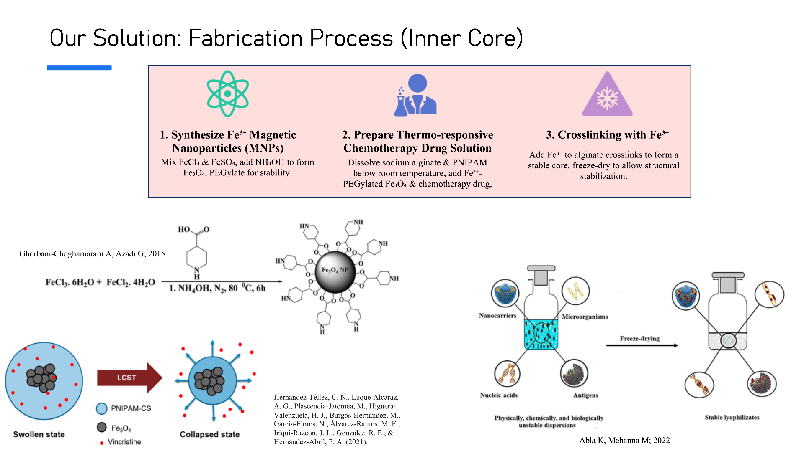
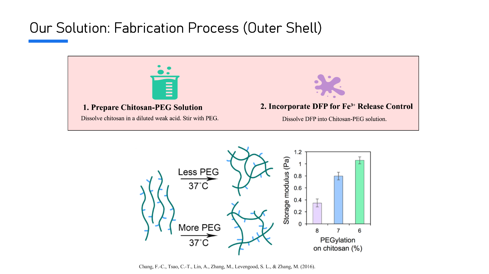
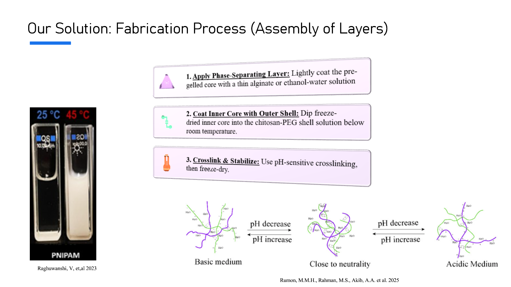
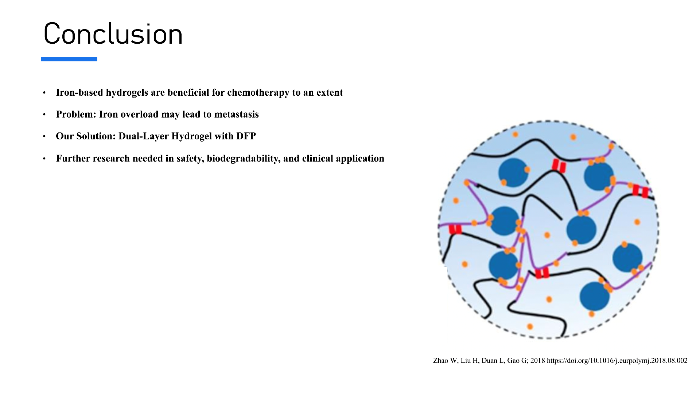

Project Overview
The goal of this project is to pick a research article and identify a research gap in which we can theoretically challenge and modify with our own solution to the problem. For our article, my partner and I looked at a study on the application of Iron based hydrogels in different contexts of postoperative tumour therapy – including chemotherapy, photodynamic therapy etc. According to the paper, Iron-based hydrogel is a safer, more bioavailable and less toxic alternative compared to existing methods to combatting metastasis and inhibiting cancer recurrence post-surgery. And what I looked at with my partner is a limitation we have pointed out in the concept of iron-based hydrogels, and our take and exploration on how to better improve the control over the release of iron into the infection site. This project is purely theoretical and no experiments were conducted.
What the Paper Says
The paper claims that the combination of iron and hydrogels is good because Hydrogels: 3d structure Crosslinks that can easily hold onto metals like iron Good response to both internal (ROS, enzyme, pH, glucose) and external stimuli (heat, light, electric, magnetic) Hydrogels are already being used as adjuvants to yield better control-release of drug delivery in general. Iron: Paramagnetic (weakly attracted to a magnetic field) properties so treatment can be well manipulated with directional intent Photothermal properties in which the hydrogel can detect as a stimuli Ferrous iron (Fe 2+; with a reducing agent, Fe3+ reduces to ferrous iron) can trigger Fenton reactions in the presence of hydrogen peroxide in which the oxidative burst of –OH hydroxyl radicals (ROS; reactive oxygen species) can lead to the rapid destruction of the cell membranes, proteins and DNA of an invading pathogen like potential recurring cancer at infection sites from post-operative surgery. This iron-based hydrogel in particular, is an MSH (Magnetic Supramolecular Hydrogel), which is a smart, water-swollen polymer network formed through reversible, non-covalent physical interactions and embedded with magnetic particles. The magnetic particle in this case is the iron, as iron exudes paramagnetic properties in which is can weakly respond to an external magnetic field. The coordination bonds formed within the MSH is between the ferric iron (3+) and the drug to be released, in which the drug molecules are held within the hydrogel network. Once exposed to an external magnetic field, the stimuli responsive properties of this MSH released localized heating in the region, where the bonds break and the drug gets released into the infection site. With MSH, there exists a magneto-responsiveness where the gel can move or change shape and generate localized heat when exposed to an external magnetic field – in this case, it is an alternating current magnetic field (ACMF). The stimuli responsiveness of MSH's responds not only to magnetic fields but also to other stimuli like light, pH, electricity, temperature changes, which can alter the internal network and viscoelasticity (stiffness and flow behaviour).
Our Response: Double-check the Iron
Iron is used well at the post-surgery site for this application – however, would the iron itself cause metastasis if the coordination bond within the hydrogel network is not enough? Could it potentially fail to counterbalance the inhibition of metastasis?
We checked a paper - Iron and cancer: overview of the evidence from population-based studies – published in 2024. It states,
" One of the detrimental effects of cellular iron overload is cancer, where iron can induce free radicals that can initiate and promote carcinogenesis"
 Therefore, for the initial study we looked at, we decided to see if there is a way to control the amount of iron being injected at the post-operative site to prevent iron overload. The hydrogel network already helps in promoting the Fenton reaction to produce hydroxyl radicals and other ROS to counter, however the risk must be further lowered to make this hydrogel network even more stable, focusing on the emphasized control-release of iron into the site through a dual-layer hydrogel with the incorporation of deferiprone(DFP), an iron chelator that has been shown to reduce ferritin levels of patients whose ferritin levels were tested for a Thalassemia study over a period of DFP dosages.
Therefore, for the initial study we looked at, we decided to see if there is a way to control the amount of iron being injected at the post-operative site to prevent iron overload. The hydrogel network already helps in promoting the Fenton reaction to produce hydroxyl radicals and other ROS to counter, however the risk must be further lowered to make this hydrogel network even more stable, focusing on the emphasized control-release of iron into the site through a dual-layer hydrogel with the incorporation of deferiprone(DFP), an iron chelator that has been shown to reduce ferritin levels of patients whose ferritin levels were tested for a Thalassemia study over a period of DFP dosages.
Our Solution



